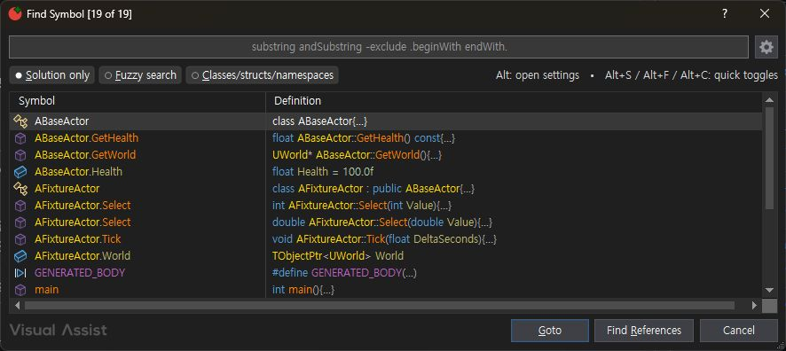

서로 다른 Visual Studio 프로세스에서 동일한 3파일 fixture를 사용해 직접 실행했습니다. 전체 108개 기능의 동등성이나 성능을 보장하는 결과가 아닙니다.
이번 결과 집합 일치: 5/5 (100.0%). 실행 기능 범위: 4/108 (3.70%). 전체 유사도: 미확인.
| 기능 / 입력 | VA | CA | 결과 집합 |
|---|---|---|---|
| Open File in Solution / blank | FixtureActor.cpp, FixtureActor.h, main.cpp | FixtureActor.cpp, FixtureActor.h, main.cpp | 일치 |
| Open File in Solution / Fixture -cpp | FixtureActor.h | FixtureActor.h | 일치 |
| Find Symbol in Solution / blank | ABaseActor, ABaseActor.GetHealth, ABaseActor.GetWorld, ABaseActor.Health, AFixtureActor, AFixtureActor.Select, AFixtureActor.Select, AFixtureActor.Tick, AFixtureActor.World, GENERATED_BODY, main, TObjectPtr, TObjectPtr.->, TObjectPtr.Value, UCLASS, UFUNCTION, UPROPERTY, UWorld, UWorld.SpawnActor | ABaseActor, AFixtureActor, GENERATED_BODY, ABaseActor.GetHealth, ABaseActor.GetWorld, ABaseActor.Health, main, TObjectPtr.->, AFixtureActor.Select, AFixtureActor.Select, UWorld.SpawnActor, AFixtureActor.Tick, TObjectPtr, UCLASS, UFUNCTION, UPROPERTY, UWorld, TObjectPtr.Value, AFixtureActor.World | 일치 |
메서드 목록 5개(오버로드 중복 포함), 도구 모음의 cpp→h 이동이 양쪽에서 일치했습니다. 메서드 목록 UI는 서로 다릅니다. Alt+O 키 경로는 이번 자동화에서 확인하지 못했습니다.
참조 필터·시그니처 변경 범위·캡슐화 참조 치환에 기능 차이가 있습니다. 전체 동기화율은 산정하지 않았습니다.
나머지 104개 기능, 편집·Undo·참조 변경 정확성, C# 등 언어별 동작, 양 테마·공장 기본값, 시작/증분 인덱싱 성능을 실행 대조해야 합니다. 기존 108개 부분 구현 매핑은 완전 구현 인증이 아닙니다.
공식 문서와 같은 목차의 CA 비교 명세 · 원본 접근성 트리·결과 JSON

